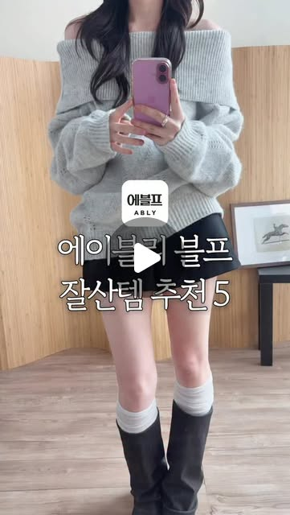
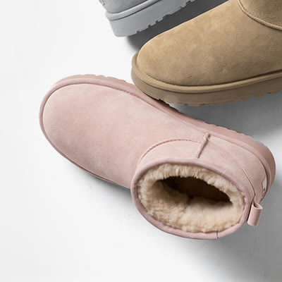
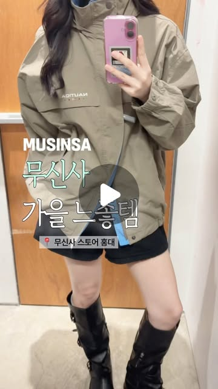
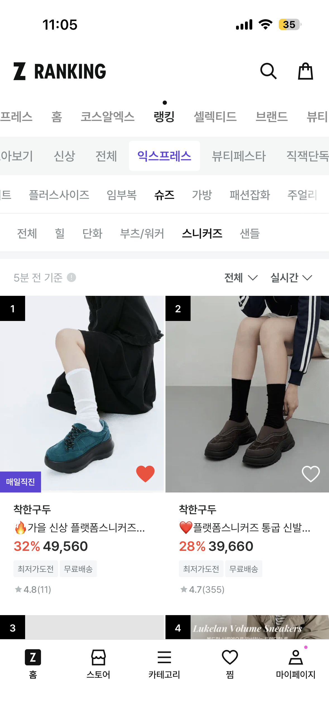

A. 잘산템 추천형
거울 셀카 + 가운데 작은 플랫폼 표시 + 흰색 두 줄 제목. 원본의 에이블리 표시는 이번에 무신사 또는 지그재그로 바꿔 주세요.
지그재그
겨울 부츠 추천
겨울 부츠 추천
상체와 신발이 함께 보이는 거리에서 시작하고, 핑크 풀문이 하단 자막에 가려지지 않게 해주세요.
지정 썸네일 원본 ↗아무님의 거울 착장 컷과 짧은 쇼핑 타이틀로 시작해요.
무신사·지그재그 포인트를 살리고, 숨은 굽과 신었을 때의 모습을 보여주세요.

아래 두 영상의 썸네일 구도를 참고해 주세요. 거울 앞 착장 컷에 풀문이 끝까지 보이게 담고, 무신사 또는 지그재그 이름과 짧은 제목을 붙여주세요. 한 안을 골라 시작하면 됩니다.

거울 셀카 + 가운데 작은 플랫폼 표시 + 흰색 두 줄 제목. 원본의 에이블리 표시는 이번에 무신사 또는 지그재그로 바꿔 주세요.
상체와 신발이 함께 보이는 거리에서 시작하고, 핑크 풀문이 하단 자막에 가려지지 않게 해주세요.
지정 썸네일 원본 ↗
거울 앞 전신 착장 + 왼쪽 플랫폼명 + 아래 두 줄 제목. 플랫폼명에 색을 주고 본문은 밝은 글자로 정리한 배치를 참고해 주세요.
한 발을 살짝 앞으로 놓아 부츠 옆면까지 보여주세요. 원본의 매장 위치 스티커는 이번 영상에 넣지 않아도 됩니다.
지정 썸네일 원본 ↗선택한 안은 이 화면에서만 표시됩니다.
썸네일과 같은 착장 컷을 1–2초 보여준 뒤, 신발을 손에 든 가까운 컷으로 바로 넘어가 주세요. 자막은 상단 약 10%, 하단 약 20%를 비워 얼굴과 신발을 가리지 않게 배치해 주세요.
신발을 들고 손가락으로 굽을 집어 가리킨 뒤, 단면 사진을 약 2초 함께 넣어 주세요. 굽과 단면이 화면 가운데 크게 보이는 거리에서 담아주세요.
 단면 사진 저장 ↓
단면 사진 저장 ↓보내드린 신발은 자르거나 안창을 빼지 않고, 위 사진을 넣어주세요.
거울 앞 하반신 → 옆에서 신은 모습 → 앞코·퍼안감 가까이 순서로, 구도를 바꿔 보여주세요. 같은 자리에서 발만 움직이는 컷을 반복하기보다 거리를 바꾸면 좋습니다.
코디는 아무님이 골라 주세요. 부츠 형태와 굽이 옷에 가려지지 않는 구도로 부탁드립니다.
썸네일에 쓴 플랫폼과 맞춰 랭킹 캡처를 약 2초 넣어주세요. 무신사·지그재그 자료를 모두 준비했습니다. 두 플랫폼을 함께 소개한다면 한 장씩 짧게 이어갈 수 있습니다.
 무신사 캡처 저장 ↓
무신사 캡처 저장 ↓
지그재그 캡처 저장 ↓위 자료에 나온 제품은 각각 페탈과 스니커즈입니다. 풀문이 1위라는 문구로 바꾸지 않고, “무신사·지그재그에서 보던 착한구두”처럼 브랜드 소개 뒤에 풀문으로 연결해 주세요.
문구는 아무님 평소 말투에 맞게 짧게 바꿔주셔도 됩니다.
풀문을 신은 모습 또는 신발만 보이는 컷으로 끝내 주세요. 추가 구도 영상은 다른 제품이므로 구도만 참고하시면 됩니다.
댓글 안내는 화면 자막이나 고정 댓글 중 편한 방식으로 넣어 주세요. 원본 예시의 5%·15% 쿠폰, 블프 기간은 이번 협업 문구에 사용하지 않습니다.
자사몰 팔로워 20% 할인코드와 전용 구매 링크는 업로드일 확정 후 전달드립니다. 코드값·적용 가격은 안내받은 내용으로 넣어주세요.